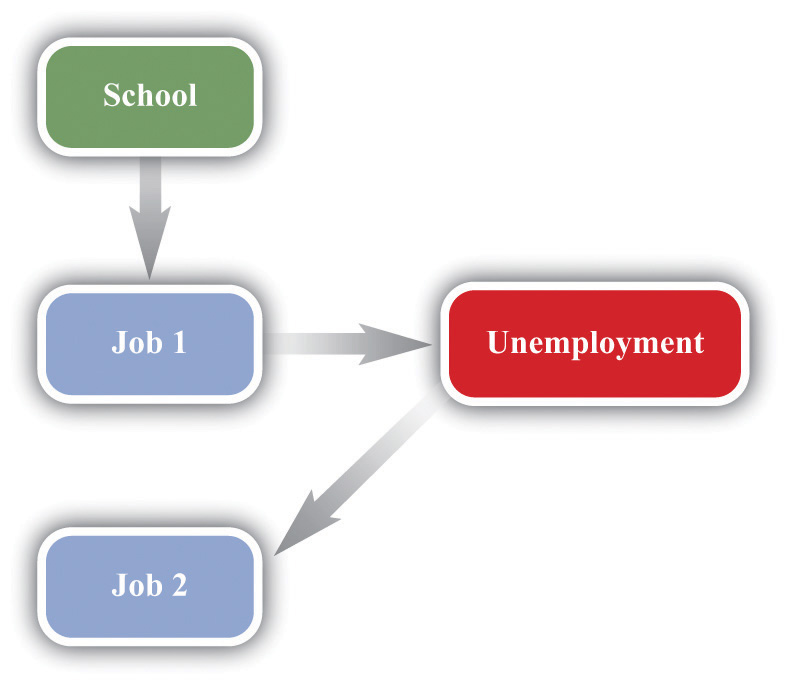

In March 2006, students demonstrated on the streets of France.
Police detained some 300 people around France after nationwide student marches against a new labor law turned violent, as street cleaners cleared away torched cars Friday and the government braced for more protests.
A quarter of a million people took to the streets in some 200 demonstrations around the country Thursday, in a test of strength between youth and the conservative government of 73-year-old President Jacques Chirac.
Most of the violence—and the arrests—were around the Sorbonne University in Paris, where police fired rubber pellets and tear gas at youths who pelted them with stones and set cars on fire.
[…]
Many trade unionists and students oppose the new youth employment law because it allows new workers under the age of 26 to be dismissed within a two-year trial period.“Violent French Protests: 300 Held,” VOV News, March 18, 2006, accessed August 22, 2011, http://english.vov.vn/Home/Violent-French-protests-300-held/20063/36835.vov.
If, like most readers of this book, you are a student in the United States, it is unlikely that you have taken part in violent demonstrations about labor policy. It is not that such demonstrations are unheard of. In Madison, Wisconsin, in 2011, there were extended protests concerning proposed changes in public sector contracts. Still, in the United States, it is accepted that the government has a limited influence on contracts between workers and firms. It is part of economic life in the United States that employment is not protected by the government. In Europe, however, many countries have extensive laws on their books that are designed to protect workers. For example, in much of Europe, unemployment insurance is more generous than in the United States. Unemployed people obtain larger benefits and are eligible for these benefits for longer periods of time.
In many European countries, it is also much more difficult to fire workers than it is in the United States. The proposed new job contract that led to the demonstrations in France was intended to reduce the nearly 25 percent unemployment rate of the French youth. Perhaps paradoxically, the contract was designed to make it easier to make young people unemployed. The logic was that firms would be willing to hire more workers if the costs of firing them were lower.
The different systems in the United States and Europe each have their defenders. Supporters of European labor laws point to the greater job security enjoyed by workers in Europe. Supporters of the US system argue that the United States enjoys greater flexibility in the labor market, leading to a more efficient economy with less unemployment. Some feel that the United States should adopt European-style labor protection measures; others feel that Europe would benefit from becoming more like the United States.
In this chapter, we look at the different experiences of Europe and the United States in order to evaluate these different approaches to the labor market. In the end, we want to be able to answer—or at least form intelligent opinions about—the following question:
What are the results of the different labor market policies in the United States and Europe?
This is not just an academic question for discussion in a textbook. In both the United States and Europe, labor market policy is frequently debated. The US Congress has considered various labor policies, such as restrictions on plant closing to protect jobs, requirements that firms offer workers health insurance, requirements that firms include paid sick days in employment contracts, and so on. At the same time, there is considerable discussion in Germany, France, and elsewhere in Europe about the possible benefits of increased labor market flexibility.
Employment and unemployment are ideas that most of us are familiar with. You may well have already been employed, at least in a part-time capacity, at some point in your life. It is also possible that you have been unemployed, meaning that you were without a job, but were actively seeking work. Our personal experiences, and those of our parents and friends, help us understand the basics of employment and unemployment.
Even if you have not yet been employed, you will begin searching for a job once you graduate with a college degree. As you surely know, finding a good job is not always easy. You want to find a job that you enjoy, fits your skills, and pays well. It is also not easy for prospective employers: they want to find someone who is suitably skilled, will work well within the firm, and is not too expensive. The challenge is to match workers and jobs: the worker needs to be suited to the job, and the job needs to be suited to the worker.
The process of matching does not happen just once. As time passes, your skills, ambitions, and choice of occupation may change. As time passes, your employer’s needs change. You may wish to move to another city. Your employer may want to move your job to another city. Most people do not spend their entire lives in one job.
A schematic representation of this process is shown in Figure 23.1 "Employment Transitions over Your Lifetime". Here you leave college and look for a job. Finding that job is likely to be time-consuming. You will have to contact lots of prospective employers, read newspaper ads, use search engines on the Internet, and, of course, show up for interviews. In the end, you will find your first job and begin your career.
Figure 23.1 Employment Transitions over Your Lifetime
You might stick with this job for a while, but in all likelihood the match between you and your employer will come to an end sooner or later. You may leave the job through your own choice because you are no longer happy with it. Alternatively, you may be forced to leave because your employer no longer has need of you. You then search for another job. When you succeed in finding a new position where your needs and desires align with those of another employer, a new match is formed.
Fifty years or so ago, people often joined companies and stayed with them for life, but this is very unusual today. You are likely to move between jobs several times during your lifetime before your eventual retirement. Sometimes you may be able to move from one job to another without interruption. At other times you will be unemployed between jobs. Throughout your life, you are likely to face periods of anxiety and stress because of the employment uncertainties that you confront:
This discussion makes it clear that we cannot analyze labor market policies without understanding the movements in and out of employment and unemployment. But before we can do so, we need to make sure we understand exactly what unemployment is, and what causes it. Thus we begin by carefully defining unemployment.In part, this is a review of material in Chapter 18 "The State of the Economy". There, we explained that the unemployment rate is one possible indicator of the overall health of the economy. We look at the data for Europe and the United States and make sense of this data using economic reasoning. We then turn to an analysis of the matching between workers and jobs and the decisions of individual workers in this process. All this analysis gives us a better understanding of unemployment and, more generally, the operation of labor markets. We conclude by evaluating labor market policies in the United States and Europe.